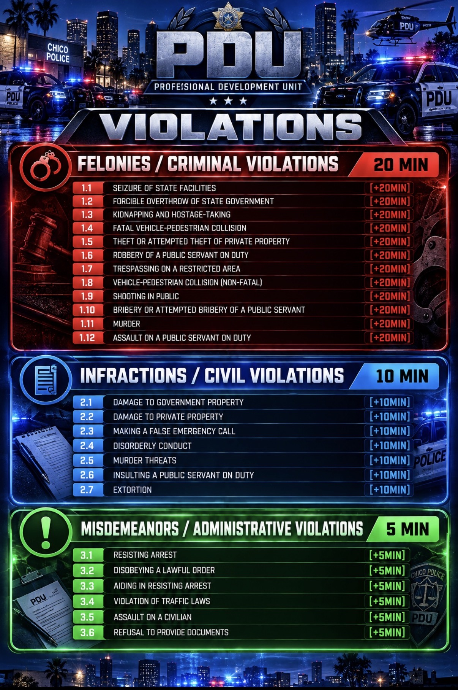
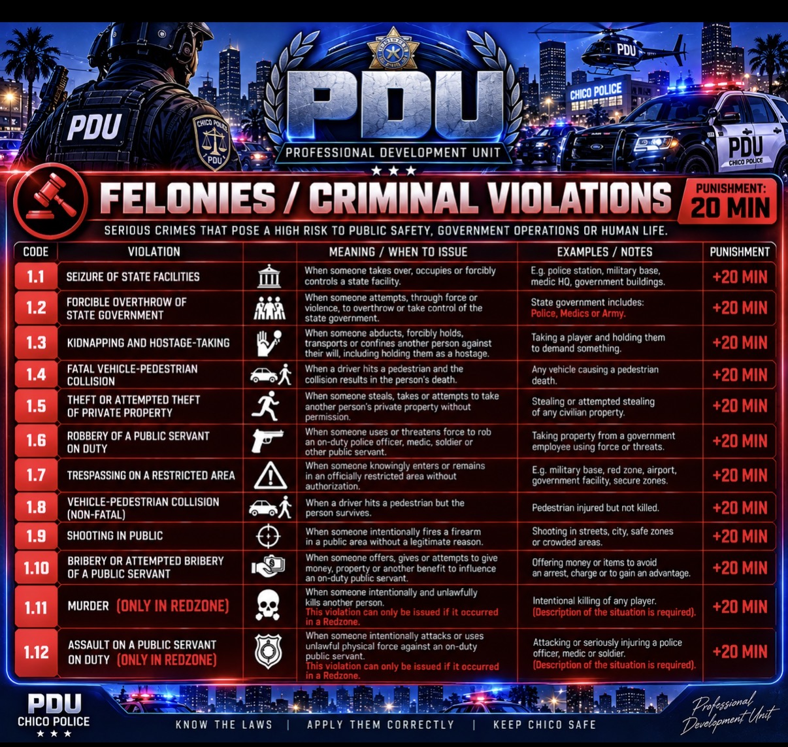
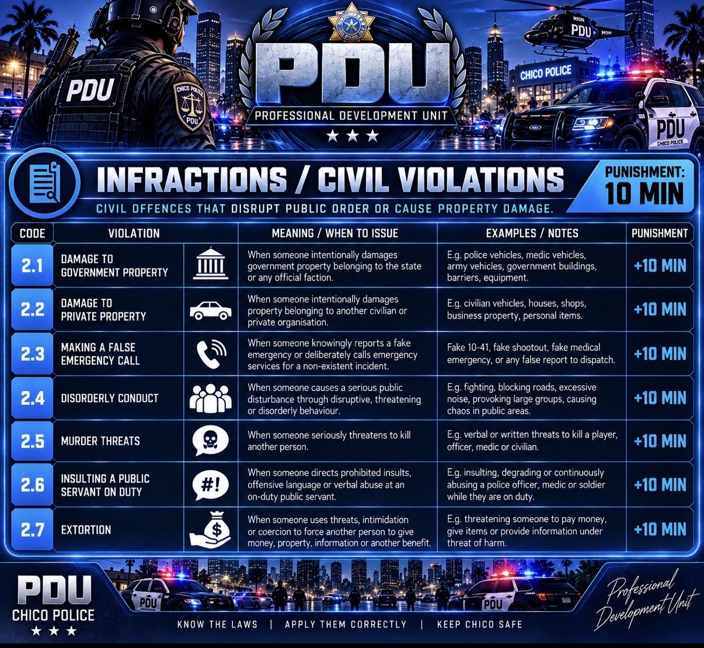
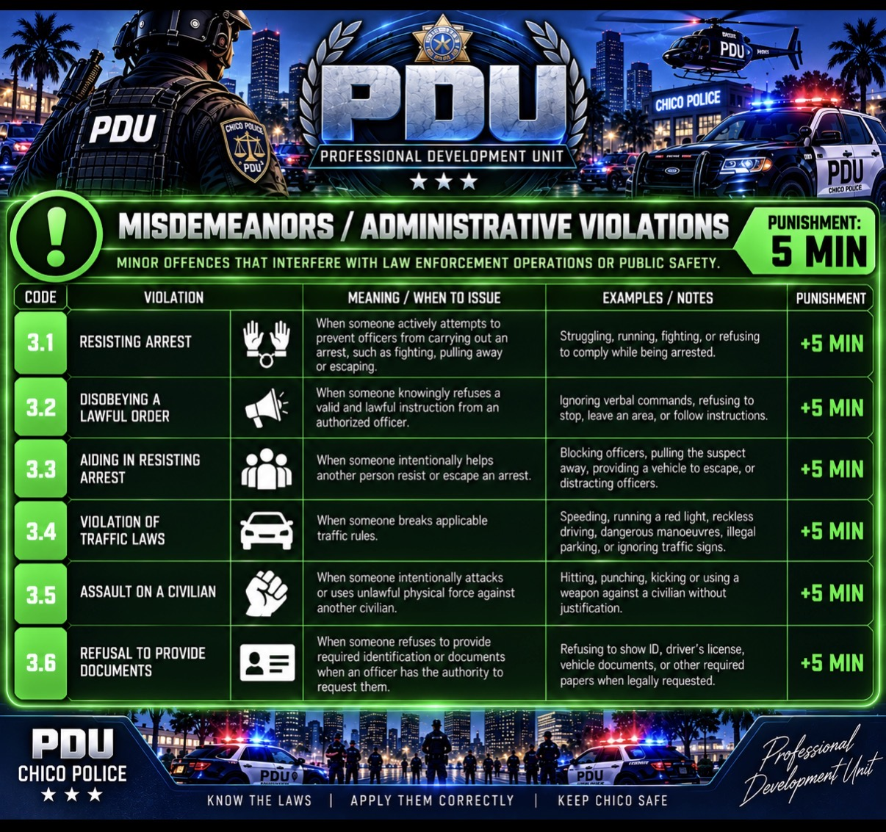

Know the law
Violations
There are three levels of violation, and each one adds time to a sentence. Tap any poster to see it full size.
Only vested or higher can give 1.x
If you are not vested, do not issue a 1.x violation yourself. Request a supervisor with a 10-37.
Always record violations
Put the macro of the violation, then click the 3 dots, record it and type the code (e.g. 3.4). Macro + recorded violation = complete.
All violations at a glance
Every code on one page: 1.x felonies add 20 minutes, 2.x infractions add 10 and 3.x misdemeanors add 5.
The macro for each one is on the Macros page.


Felonies: 20 min
Serious crimes that pose a high risk to public safety, government operations or human life, such as kidnapping, robbery of an on-duty officer and shooting in public.
1.11 Murder and 1.12 Assault on a public servant can only be issued in a Redzone, and need a description of the situation.


Infractions: 10 min
Civil offences that disrupt public order or cause property damage, such as damaging property, false emergency calls, disorderly conduct and extortion.


Misdemeanors: 5 min
Minor offences that interfere with law enforcement or public safety, such as resisting arrest, disobeying a lawful order, breaking traffic laws and refusing to show documents.

